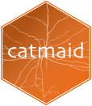
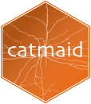

This package provides access to the CATMAID API for R users. At present it provides low level functions for appropriately authenticated GET/POST requests, optionally parsing JSON responses. There are also intermediate level functions that retrieve skeleton (i.e. neuron) information, connectivity information for one or more neurons as well as a number of other API endpoints. Finally, there is a high level function to convert neurons to the representation of the nat (NeuroAnatomy Toolbox) R package, enabling a wide variety of analyses.
It is strongly recommended to read through the instructions below, the package overview documentation and then skim the reference documentation index , which groups the available functions into useful categories.
Example
This example is based on EM tracing data from the Drosophila first instar larva by Albert Cardona and colleagues as submitted to Virtual Fly Brain and visible at https://catmaid.virtualflybrain.org.
This produces a 3D plot of first and second order olfactory neurons coloured according to the peripheral odorant receptor.
library(catmaid)
# Specify VFB CAMAID server containing data
conn=catmaid_login(server="https://l1em.catmaid.virtualflybrain.org")
# fetch olfactory receptor neurons
orns=read.neurons.catmaid("name:ORN (left|right)", .progress='text')
# calculate some useful metadata
orns[,'Or']= factor(sub(" ORN.*", "", orns[,'name']))
orns[,'side']= factor(sub(".* ORN ", "", orns[,'name']))
# repeat for their PN partners, note use of search by annotation
pns=read.neurons.catmaid("ORN PNs", .progress='text')
pns[,'Or']= factor(sub(" PN.*", "", pns[,'name']))
pns[,'side']= factor(sub(".*(left|right)", "\\1", pns[,'name']))
# plot, colouring by odorant receptor
plot3d(orns, col=Or)
# note that we plot somata with a radius of 1500 nm
plot3d(pns, col=Or, soma=1500)Which produces the following output plot:
[ ]
]
Authentication
You will obviously need to have the login details of a valid CATMAID instance to try this out. As of December 2015 CATMAID is moving to token based authentication. For this you will need to get an API token when you are logged into the CATMAID web client in your browser. See http://catmaid.github.io/dev/api.html#api-token for details.
Once you have the login information you can use the catmaid_login function to authenticate. The minimal information is your server URL and your CATMAID token.
catmaid_login(server="https://mycatmaidserver.org/catmaidroot",
authname="Calvin",authpassword="hobbes",
token="9944b09199c62bcf9418ad846dd0e4bbdfc6ee4b")Note that the CATMAID servers that I am aware of require two layers of password protection, an outer HTTP auth type user/password combination as well as an inner CATMAID-specific token based login. The outer HTTP auth type user/password combination may be specific to you or generic to the project.
Setting environment variables in your .Renviron file
It is recommended that you set your login details by including code like this in in your .Renviron file:
catmaid_server="https://mycatmaidserver.org/catmaidroot"
catmaid_token="9944b09199c62bcf9418ad846dd0e4bbdfc6ee4b"
# additional security for mycatmaidserver.org/catmaidroot page
catmaid_authname="Calvin"
catmaid_authpassword="hobbes"In this way authentication will happen transparently as required by all functions that interact with the specified CATMAID server.
Be sure to leave one blank line at the end of the .Renviron file, or it will not work. Note that catmaid_server rather than catmaid.server is now the preferred form of specifying environment variables (some shells do not like variables with periods in their name). Note also that the use of package options in your .Rprofile file is still possible but now deprecated.
Cached authentication
Whether you use options in your .Renviron as described above or you login explicitly at the start of a session using catmaid_login the access credentials will be cached for the rest of the session. You can still authenticate explicitly to a different CATMAID server (using catmaid_login) if you wish.
Multiple servers
If you use more than one CATMAID server but always do so in different sessions or rmarkdown scripts then you can save an appropriate .Renviron file in the project folder.
If you need to talk to more than one CATMAID server in a single session then you must use catmaid_login to login into each server
# log in to default server specified in .Renviron/.Rprofile
conn1=catmaid_login()
# log into another server, presumably with different credentials
conn2=catmaid_login(server='https://my.otherserver.com', ...)and then use the returned connection objects with any calls you make e.g.
# fetch neuron from server 1
n1=read.neuron(123, conn=conn1)
# fetch neuron from server 2
n2=read.neuron(123, conn=conn2)n.b. you must use connection objects to talk to both servers because if no connection object is specified, the last connection will be re-used.
Installation
Currently there isn’t a released version on CRAN but can use the devtools package to install the development version:
Note: Windows users need Rtools and devtools to install this way.
Acknowledgements
Originally based on python code presently visible at:
- https://github.com/catmaid/CATMAID/blob/master/scripts/remote/access.py
- https://github.com/catmaid/CATMAID/blob/master/django/applications/catmaid/urls.py
- https://github.com/schlegelp/CATMAID-to-Blender/blob/master/CATMAIDImport.py
by Albert Cardona and Philipp Schlegel. Released under the GPL-3 license.